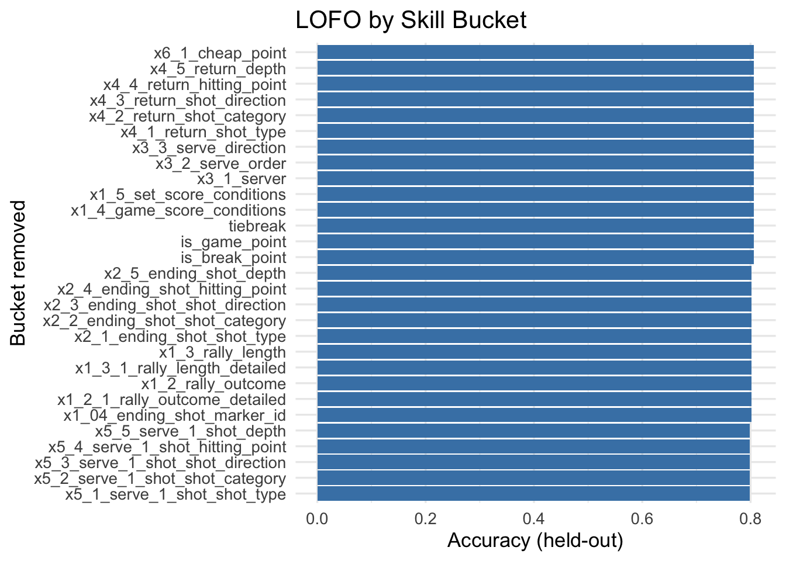

Show code
library(tidyverse)
library(janitor)
library(recipes)
library(keras3)Point-level tracking, engineered context, and a neural net with player embeddings show which skill buckets raise each athlete’s point-win odds the most.
From raw CSVs to player-specific training recommendations.
College match CSVs are cleaned, score-aware features engineered, and players mapped so P1/P2 labels stay consistent.
Serve/return intent, rally length, and pressure indicators feed recipes that keep the sequence of play intact.
A neural net with player embeddings predicts point-win probability; leave-one-feature-out tests surface what matters.
Counterfactual uplift per player and skill bucket ranks which drills move the needle fastest for each athlete.
Use the notebook like a guide: skim the structure, then deep-dive where you need detail.
Start with the data recoding/feature blocks, jump to the modeling chunk, then review the uplift tables that drive recommendations.
Use the “Show/Hide Code” control in the notebook header to read just the narrative or inspect the R that builds each artifact.
Look for the top skill bucket per player and the delta in point-win probability to align practice plans.
Scroll, filter, and toggle code to explore the preprocessing, modeling, and uplift logic that powers the recommendations.
This notebook is standalone and reuses the preprocessing/modeling ideas from analysis.qmd, but adds player-aware skill buckets plus counterfactual uplift scoring to recommend what each player should train first.
library(tidyverse)
library(janitor)
library(recipes)
library(keras3)recode_match preserves player names (P1/P2 per match) so we can attribute wins to specific players later.
recode_match <- function(df) {
df <- df |> janitor::clean_names()
players <- unique(c(df$x1_1_who_won_the_point, df$x1_11_who_lost_the_point))
players <- players[!is.na(players) & players != ""]
if (length(players) != 2) return(NULL)
p1 <- players[1]; p2 <- players[2]
df %>%
mutate(
winner = case_when(
x1_1_who_won_the_point == p1 ~ "P1",
x1_1_who_won_the_point == p2 ~ "P2",
TRUE ~ NA_character_
),
server = case_when(
x3_1_server == p1 ~ "P1",
x3_1_server == p2 ~ "P2",
TRUE ~ NA_character_
),
returner = case_when(
x4_1_returner == p1 ~ "P1",
x4_1_returner == p2 ~ "P2",
TRUE ~ NA_character_
),
p1_name = p1,
p2_name = p2,
winner = factor(winner, levels = c("P1", "P2")),
server = factor(server, levels = c("P1", "P2")),
returner = factor(returner, levels = c("P1", "P2"))
)
}
path <- "Comstat Data"
files <- list.files(path, pattern = "\\.csv$", full.names = TRUE)
raw_data <- files %>%
map(~ read_csv(.x, show_col_types = FALSE) |> recode_match()) %>%
discard(is.null) %>%
bind_rows(.id = "match_id")parse_score converts the string score into numeric state and pressure flags. We keep both the P1/P2 identifiers and actual player names for player-specific uplift.
parse_score <- function(score_string) {
blank_row <- tibble(
set_number = NA_integer_,
games_server = NA_integer_,
games_returner = NA_integer_,
points_server = NA_integer_,
points_returner = NA_integer_,
tiebreak = NA_integer_,
is_break_point = NA_integer_,
is_game_point = NA_integer_
)
if (is.na(score_string) || score_string == "") return(blank_row)
parts <- str_split(score_string, ";")[[1]] |> trimws()
if (length(parts) < 3) return(blank_row)
set_number <- suppressWarnings(as.integer(str_extract(parts[1], "\\d+")))
game_score <- str_split(parts[2], ":")[[1]]
games_server <- suppressWarnings(as.integer(game_score[1]))
games_returner <- suppressWarnings(as.integer(game_score[2]))
pts_map <- c("0" = 0, "15" = 1, "30" = 2, "40" = 3, "AD" = 4)
point_clean <- gsub("\\*", "", parts[3])
pts <- str_split(point_clean, ":")[[1]]
points_server <- if (length(pts) >= 1 && pts[1] %in% names(pts_map)) pts_map[pts[1]] else NA_integer_
points_returner <- if (length(pts) >= 2 && pts[2] %in% names(pts_map)) pts_map[pts[2]] else NA_integer_
tiebreak <- as.integer(points_server > 4 | points_returner > 4)
is_break_point <- as.integer(points_returner == 4 && points_server <= 3)
is_game_point <- as.integer(points_server == 4 && points_returner <= 3)
tibble(
set_number,
games_server,
games_returner,
points_server,
points_returner,
tiebreak,
is_break_point,
is_game_point
)
}
desired_cols <- c(
"match_id", "winner", "p1_name", "p2_name",
"x1_01_position", "x1_02_duration", "x1_03_score", "x1_04_ending_shot_marker_id",
"x1_2_rally_outcome", "x1_2_1_rally_outcome_detailed", "x1_3_rally_length", "x1_3_1_rally_length_detailed",
"x1_4_game_score_conditions", "x1_5_set_score_conditions",
"x2_1_ending_shot_shot_type", "x2_2_ending_shot_shot_category", "x2_3_ending_shot_shot_direction",
"x2_4_ending_shot_hitting_point", "x2_5_ending_shot_depth",
"x3_1_server", "x3_2_serve_order", "x3_3_serve_direction",
"x4_1_return_shot_type", "x4_1_returner", "x4_2_return_shot_category", "x4_3_return_shot_direction",
"x4_4_return_hitting_point", "x4_5_return_depth",
"x5_1_serve_1_shot_shot_type", "x5_2_serve_1_shot_shot_category", "x5_3_serve_1_shot_shot_direction",
"x5_4_serve_1_shot_hitting_point", "x5_5_serve_1_shot_depth",
"x6_1_cheap_point", "x7_1_disputable_point", "server", "returner"
)
# any_of prevents select() from failing if a column is missing in some files
clean_data <- raw_data %>%
select(any_of(desired_cols)) %>%
mutate(
parsed = map(x1_03_score, parse_score),
server_player = x3_1_server,
returner_player = x4_1_returner
) %>%
unnest(parsed) %>%
select(-x1_03_score) %>%
mutate(
server_is_p1 = if_else(server == "P1", 1L, 0L),
across(c(tiebreak, is_break_point, is_game_point), ~ as.integer(.x))
)Grouping columns into trainable skill areas simplifies both LOFO and counterfactual tweaks.
skill_buckets <- list(
serve = c("x3_1_server", "x3_2_serve_order", "x3_3_serve_direction", "x6_1_cheap_point"),
return = c("x4_1_return_shot_type", "x4_2_return_shot_category", "x4_3_return_shot_direction", "x4_4_return_hitting_point", "x4_5_return_depth"),
serve_plus_one = c("x5_1_serve_1_shot_shot_type", "x5_2_serve_1_shot_shot_category", "x5_3_serve_1_shot_shot_direction", "x5_4_serve_1_shot_hitting_point", "x5_5_serve_1_shot_depth"),
rally_control = c("x1_2_rally_outcome", "x1_2_1_rally_outcome_detailed", "x1_3_rally_length", "x1_3_1_rally_length_detailed", "x1_04_ending_shot_marker_id",
"x2_1_ending_shot_shot_type", "x2_2_ending_shot_shot_category", "x2_3_ending_shot_shot_direction", "x2_4_ending_shot_hitting_point", "x2_5_ending_shot_depth"),
pressure = c("x1_4_game_score_conditions", "x1_5_set_score_conditions", "tiebreak", "is_break_point", "is_game_point")
)We keep player names as categorical inputs (embedded) so the model can learn player-specific baselines. High-cardinality columns are handled with embeddings.
clean_data <- clean_data %>%
mutate(
across(where(is.character), as.factor),
winner = as.factor(winner)
)
set.seed(123)
train_matches <- sample(unique(clean_data$match_id), size = 0.8 * n_distinct(clean_data$match_id))
train_df <- filter(clean_data, match_id %in% train_matches)
test_df <- filter(clean_data, !match_id %in% train_matches)
numeric_vars <- c(
"x1_02_duration",
"set_number",
"games_server", "games_returner",
"points_server", "points_returner",
"tiebreak", "is_break_point", "is_game_point",
"server_is_p1"
)
rec <- recipe(winner ~ ., data = train_df) %>%
update_role(match_id, new_role = "ID") %>%
step_unknown(all_nominal_predictors()) %>%
step_string2factor(all_nominal_predictors()) %>%
step_impute_median(all_of(numeric_vars)) %>%
step_zv(all_predictors()) %>% # drop zero-variance predictors before scaling
step_normalize(all_numeric_predictors())
prep_rec <- prep(rec)
train_processed <- bake(prep_rec, train_df)
test_processed <- bake(prep_rec, test_df)
# Recompute actual processed numeric/categorical vars post-recipe
numeric_vars <- train_processed %>%
select(where(is.numeric)) %>%
names()
categorical_vars <- setdiff(names(train_processed), c("match_id", "winner", numeric_vars))What the model does: - Turns every categorical feature (including player IDs) into a trainable embedding vector, which lets the net learn player-specific tendencies and category interactions without huge one-hot inputs. - Normalizes numeric features for stable optimization. - Stacks dense layers with ReLU and dropout to learn nonlinear relationships between context (score/pressure), player identity, and shot choices.
make_embedding <- function(input_name, levels) {
input <- layer_input(shape = 1, dtype = "int32", name = input_name)
embed_dim <- min(50, ceiling(levels / 2))
embed <- input |>
layer_embedding(input_dim = levels + 1,
output_dim = embed_dim,
name = paste0(input_name, "_embed")) |>
layer_flatten()
list(input = input, output = embed)
}
embedding_layers <- map(categorical_vars, ~{
n_levels <- length(levels(train_processed[[.x]]))
make_embedding(.x, n_levels)
})
numeric_input <- layer_input(shape = length(numeric_vars), name = "numeric_input")
numeric_dense <- numeric_input |>
layer_dense(units = 32, activation = "relu")
all_inputs <- c(map(embedding_layers, "input"), list(numeric_input))
all_embeddings <- map(embedding_layers, "output")
output <- layer_concatenate(c(all_embeddings, list(numeric_dense))) |>
layer_dense(units = 128, activation = "relu") |>
layer_dropout(0.3) |>
layer_dense(units = 64, activation = "relu") |>
layer_dropout(0.3) |>
layer_dense(units = length(levels(train_processed$winner)),
activation = "softmax",
name = "output")
model <- keras_model(inputs = all_inputs, outputs = output) |>
compile(
loss = "sparse_categorical_crossentropy",
optimizer = "adam",
metrics = "accuracy"
)We train with class weights (handles any P1/P2 imbalance) and early stopping to prevent overfitting.
x_train <- lapply(categorical_vars, function(col) as.integer(train_processed[[col]]))
names(x_train) <- categorical_vars
x_train[["numeric_input"]] <- as.matrix(train_processed[numeric_vars])
y_train <- as.integer(train_processed$winner) - 1
class_counts <- table(train_processed$winner)
class_weights <- as.list(sum(class_counts) / (length(class_counts) * class_counts))
names(class_weights) <- 0:(length(class_weights) - 1)
early_stop <- callback_early_stopping(
monitor = "val_loss",
patience = 30,
restore_best_weights = TRUE
)
history <- model |>
fit(
x = x_train,
y = y_train,
epochs = 80,
batch_size = 64,
validation_split = 0.2,
callbacks = list(early_stop),
class_weight = class_weights,
verbose = 0
)x_test <- lapply(categorical_vars, function(col) as.integer(test_processed[[col]]))
names(x_test) <- categorical_vars
x_test[["numeric_input"]] <- as.matrix(test_processed[numeric_vars])
y_test <- as.integer(test_processed$winner) - 1
model |> evaluate(x_test, y_test, verbose = 0)$accuracy
[1] 0.7670251
$loss
[1] 0.3849202LOFO (Leave-One-Feature-Out) here removes an entire skill bucket, retrains a small model, and measures the drop in accuracy. Bigger drops mean that skill bucket is more informative to point outcomes.
run_lofo_bucket <- function(bucket_name, bucket_cols) {
message("LOFO bucket: ", bucket_name)
keep_cols <- setdiff(names(train_df), bucket_cols)
train_sub <- train_df %>% select(all_of(keep_cols))
test_sub <- test_df %>% select(all_of(keep_cols))
numeric_sub <- train_sub %>% select(where(is.numeric)) %>% names()
categorical_sub <- setdiff(names(train_sub), c("match_id", "winner", numeric_sub))
rec_sub <- recipe(winner ~ ., data = train_sub) %>%
update_role(match_id, new_role = "ID") %>%
step_unknown(all_nominal_predictors()) %>%
step_string2factor(all_nominal_predictors()) %>%
step_impute_median(all_of(numeric_sub)) %>%
step_zv(all_predictors()) %>%
step_normalize(all_numeric_predictors())
prep_sub <- prep(rec_sub)
train_p <- bake(prep_sub, train_sub)
test_p <- bake(prep_sub, test_sub)
# Update processed var lists after prep
numeric_sub <- train_p %>% select(where(is.numeric)) %>% names()
categorical_sub <- setdiff(names(train_p), c("match_id", "winner", numeric_sub))
embed_layers_sub <- map(categorical_sub, ~{
n_levels <- length(levels(train_p[[.x]]))
make_embedding(.x, n_levels)
})
numeric_input_sub <- layer_input(shape = length(numeric_sub), name = "numeric_input")
numeric_dense_sub <- numeric_input_sub |> layer_dense(units = 32, activation = "relu")
all_inputs_sub <- c(map(embed_layers_sub, "input"), list(numeric_input_sub))
all_embeds_sub <- map(embed_layers_sub, "output")
out_sub <- layer_concatenate(c(all_embeds_sub, list(numeric_dense_sub))) |>
layer_dense(units = 128, activation = "relu") |>
layer_dropout(0.3) |>
layer_dense(units = 64, activation = "relu") |>
layer_dropout(0.3) |>
layer_dense(units = 2, activation = "softmax", name = "output")
model_sub <- keras_model(inputs = all_inputs_sub, outputs = out_sub) |>
compile(
loss = "sparse_categorical_crossentropy",
optimizer = "adam",
metrics = "accuracy"
)
x_train_sub <- lapply(categorical_sub, function(col) as.integer(train_p[[col]]))
names(x_train_sub) <- categorical_sub
x_train_sub[["numeric_input"]] <- as.matrix(train_p[numeric_sub])
y_train_sub <- as.integer(train_p$winner) - 1
model_sub |>
fit(
x = x_train_sub,
y = y_train_sub,
epochs = 25,
batch_size = 64,
validation_split = 0.2,
verbose = 0
)
x_test_sub <- lapply(categorical_sub, function(col) as.integer(test_p[[col]]))
names(x_test_sub) <- categorical_sub
x_test_sub[["numeric_input"]] <- as.matrix(test_p[numeric_sub])
y_test_sub <- as.integer(test_p$winner) - 1
acc <- (model_sub |> evaluate(x_test_sub, y_test_sub, verbose = 0))$accuracy
tibble(bucket = bucket_name, accuracy = acc)
}
lofo_results <- imap_dfr(skill_buckets, run_lofo_bucket)
lofo_results %>%
ggplot(aes(x = reorder(bucket, accuracy), y = accuracy)) +
geom_col(fill = "steelblue") +
coord_flip() +
labs(title = "LOFO by Skill Bucket", x = "Bucket removed", y = "Accuracy (held-out)") +
theme_minimal(base_size = 13)
Uplift answers “what if this player improved one skill bucket?” We simulate cleaner decisions by swapping each bucket’s values to the player’s own winning-mode choices, re-predict point-win probabilities, and take the delta vs. baseline. Positive uplift means that bucket is the highest-leverage training focus for that player.
mode_or_first <- function(vec) {
tab <- sort(table(vec), decreasing = TRUE)
if (length(tab) == 0) return(NA)
names(tab)[1]
}
predict_probs <- function(model, processed_df, categorical_vars, numeric_vars) {
x_list <- lapply(categorical_vars, function(col) as.integer(processed_df[[col]]))
names(x_list) <- categorical_vars
x_list[["numeric_input"]] <- as.matrix(processed_df[numeric_vars])
preds <- predict(model, x_list, verbose = 0)
as.numeric(preds[, 1]) # P1 probability
}
player_points <- function(player, data = clean_data) {
player_chr <- as.character(player)
data %>%
filter(as.character(server_player) == player_chr | as.character(returner_player) == player_chr) %>%
mutate(player_is_p1 = (as.character(p1_name) == player_chr))
}
apply_bucket_tweak <- function(df, player, bucket_cols) {
win_mask <- if_else(df$player_is_p1, df$winner == "P1", df$winner == "P2")
wins_df <- df[win_mask %in% TRUE, , drop = FALSE]
# For each column in bucket, set to player's winning mode (fallback to overall mode)
for (col in bucket_cols) {
if (!col %in% names(df)) next
if (is.factor(df[[col]])) {
target_val <- mode_or_first(wins_df[[col]])
if (is.na(target_val)) target_val <- mode_or_first(df[[col]])
df[[col]] <- factor(target_val, levels = levels(df[[col]]))
}
}
df
}
compute_uplift <- function(player, bucket_name) {
bucket_cols <- skill_buckets[[bucket_name]]
df_player <- player_points(player)
if (nrow(df_player) == 0) return(tibble(player = player, bucket = bucket_name, uplift = NA))
base_processed <- bake(prep_rec, df_player)
base_probs_p1 <- predict_probs(model, base_processed, categorical_vars, numeric_vars)
base_player_prob <- if_else(df_player$player_is_p1, base_probs_p1, 1 - base_probs_p1)
tweaked_df <- apply_bucket_tweak(df_player, player, bucket_cols)
tweaked_processed <- bake(prep_rec, tweaked_df)
tweaked_probs_p1 <- predict_probs(model, tweaked_processed, categorical_vars, numeric_vars)
tweaked_player_prob <- if_else(tweaked_df$player_is_p1, tweaked_probs_p1, 1 - tweaked_probs_p1)
uplift <- mean(tweaked_player_prob - base_player_prob, na.rm = TRUE)
tibble(uplift = uplift)
}
all_players <- clean_data %>%
mutate(
server_player = as.character(server_player),
returner_player = as.character(returner_player)
) %>%
select(server_player, returner_player) %>%
pivot_longer(everything(), values_to = "player") %>%
transmute(player = str_trim(player)) %>%
filter(!is.na(player), player != "") %>%
distinct() %>%
arrange(player) %>%
pull(player)
uplift_table <- crossing(player = all_players, bucket = names(skill_buckets)) %>%
mutate(res = map2(player, bucket, compute_uplift)) %>%
unnest(res)| Player | Skill bucket | Uplift (Delta point-win prob) |
|---|---|---|
| Advik Mareedu | serve_plus_one | -0.001 |
| Anirudh Gupta | serve | 0.036 |
| Ben Lammert | serve_plus_one | 0.073 |
| Blake Bothmer | return | 0.024 |
| Brandon Vu | serve | 0.072 |
| Caleb Settles | pressure | 0.002 |
| Charlie Coleman | rally_control | 0.007 |
| Drew Goldman | return | 0.007 |
| Ethan Zou | serve | 0.014 |
| Henry Hyden | serve | 0.073 |
| Hugh Hentschel | serve_plus_one | 0.052 |
| Jack Scott | serve | 0.051 |
| Jay Mallampati | rally_control | 0.022 |
| John Wehrle | serve | 0.045 |
| Jordan Theron | serve | 0.021 |
| Josh Kim | serve_plus_one | 0.006 |
| Kael Shalin Shah | serve | 0.038 |
| Leo Rocca | pressure | 0.000 |
| Lucas Elkins | serve_plus_one | 0.056 |
| Luke Feng | serve | 0.025 |
| Matthew Robinson | serve | 0.053 |
| Neil Chulani | serve_plus_one | 0.040 |
| Noah Laber | serve | 0.042 |
| Noah Lewis | serve_plus_one | 0.046 |
| Sam English | rally_control | 0.008 |
| Sam Saeed | serve | 0.067 |
| Talman Ramsey | return | 0.004 |
| Tanner Ige | serve | 0.029 |
| Tarm Rojanasoonthon | serve_plus_one | 0.064 |
| Player | Skill bucket | Uplift (Delta point-win prob) |
|---|---|---|
| Advik Mareedu | serve_plus_one | -0.001 |
| Advik Mareedu | pressure | -0.002 |
| Advik Mareedu | rally_control | -0.003 |
| Anirudh Gupta | serve | 0.036 |
| Anirudh Gupta | return | 0.006 |
| Anirudh Gupta | pressure | -0.005 |
| Ben Lammert | serve_plus_one | 0.073 |
| Ben Lammert | return | 0.031 |
| Ben Lammert | serve | 0.019 |
| Blake Bothmer | return | 0.024 |
| Blake Bothmer | pressure | -0.004 |
| Blake Bothmer | serve_plus_one | -0.023 |
| Brandon Vu | serve | 0.072 |
| Brandon Vu | serve_plus_one | 0.033 |
| Brandon Vu | return | 0.014 |
| Caleb Settles | pressure | 0.002 |
| Caleb Settles | rally_control | 0.001 |
| Caleb Settles | serve | -0.011 |
| Charlie Coleman | rally_control | 0.007 |
| Charlie Coleman | return | -0.003 |
| Charlie Coleman | pressure | -0.007 |
| Drew Goldman | return | 0.007 |
| Drew Goldman | serve | 0.005 |
| Drew Goldman | pressure | 0.002 |
| Ethan Zou | serve | 0.014 |
| Ethan Zou | serve_plus_one | 0.011 |
| Ethan Zou | rally_control | 0.002 |
| Henry Hyden | serve | 0.073 |
| Henry Hyden | rally_control | 0.019 |
| Henry Hyden | pressure | -0.005 |
| Hugh Hentschel | serve_plus_one | 0.052 |
| Hugh Hentschel | rally_control | 0.039 |
| Hugh Hentschel | return | 0.024 |
| Jack Scott | serve | 0.051 |
| Jack Scott | rally_control | 0.018 |
| Jack Scott | return | 0.018 |
| Jay Mallampati | rally_control | 0.022 |
| Jay Mallampati | serve | 0.015 |
| Jay Mallampati | pressure | 0.009 |
| John Wehrle | serve | 0.045 |
| John Wehrle | rally_control | 0.012 |
| John Wehrle | return | 0.000 |
| Jordan Theron | serve | 0.021 |
| Jordan Theron | pressure | -0.007 |
| Jordan Theron | return | -0.023 |
| Josh Kim | serve_plus_one | 0.006 |
| Josh Kim | rally_control | 0.000 |
| Josh Kim | pressure | -0.010 |
| Kael Shalin Shah | serve | 0.038 |
| Kael Shalin Shah | pressure | 0.012 |
| Kael Shalin Shah | rally_control | 0.010 |
| Leo Rocca | pressure | 0.000 |
| Leo Rocca | serve_plus_one | -0.006 |
| Leo Rocca | return | -0.007 |
| Lucas Elkins | serve_plus_one | 0.056 |
| Lucas Elkins | rally_control | 0.050 |
| Lucas Elkins | return | 0.014 |
| Luke Feng | serve | 0.025 |
| Luke Feng | rally_control | 0.006 |
| Luke Feng | return | 0.005 |
| Matthew Robinson | serve | 0.053 |
| Matthew Robinson | rally_control | 0.013 |
| Matthew Robinson | serve_plus_one | 0.002 |
| Neil Chulani | serve_plus_one | 0.040 |
| Neil Chulani | serve | 0.009 |
| Neil Chulani | pressure | 0.003 |
| Noah Laber | serve | 0.042 |
| Noah Laber | rally_control | 0.037 |
| Noah Laber | pressure | -0.005 |
| Noah Lewis | serve_plus_one | 0.046 |
| Noah Lewis | return | 0.021 |
| Noah Lewis | pressure | 0.009 |
| Sam English | rally_control | 0.008 |
| Sam English | return | 0.001 |
| Sam English | pressure | -0.001 |
| Sam Saeed | serve | 0.067 |
| Sam Saeed | serve_plus_one | 0.064 |
| Sam Saeed | return | 0.025 |
| Talman Ramsey | return | 0.004 |
| Talman Ramsey | serve | 0.001 |
| Talman Ramsey | rally_control | -0.003 |
| Tanner Ige | serve | 0.029 |
| Tanner Ige | serve_plus_one | 0.025 |
| Tanner Ige | pressure | 0.004 |
| Tarm Rojanasoonthon | serve_plus_one | 0.064 |
| Tarm Rojanasoonthon | serve | 0.032 |
| Tarm Rojanasoonthon | rally_control | 0.000 |
| Author | Skill bucket | Uplift (Delta point-win prob) |
|---|---|---|
| Charlie Coleman | rally_control | 0.007 |
| Drew Goldman | return | 0.007 |
| Neil Chulani | serve_plus_one | 0.040 |